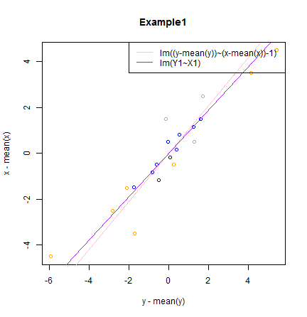
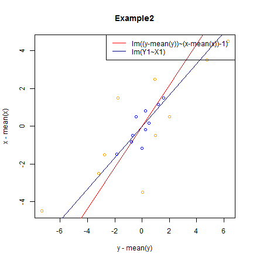

Suppose we have data of x and y. Are the following two linear regression the same?
Case 1
lm(I(y - mean(y)) ~ I(x - mean(x)) - 1)
Case 2
X1 <- (x - mean(x))/sd(x)
Y1 <- (y - mean(y))/sd(y)
lm(Y1 ~ X1)
Helen Gu, Teacher of Shanghai Sports Institute
Shanghai Sports Institute
Suppose we have data of x and y. Are the following two linear regression the same?
Case 1
lm(I(y - mean(y)) ~ I(x - mean(x)) - 1)
Case 2
X1 <- (x - mean(x))/sd(x)
Y1 <- (y - mean(y))/sd(y)
lm(Y1 ~ X1)
x=c(1:10)
y=1+5*runif(10)+x

x=c(1:10)
y=1+10*runif(10)+x

From the Examples,
the intercept of two cases are the same, they all equal 0.
the slope of two cases are different. The difference is depend on sd(x)/sd(y). Because relation of the slope of case 2 (\(k_{2}\)) and case 1 (\(k_{1}\)) is \(k_{2}\)=\(\frac{sd(x)}{sd(y)}\times\)\(k_{1}\).